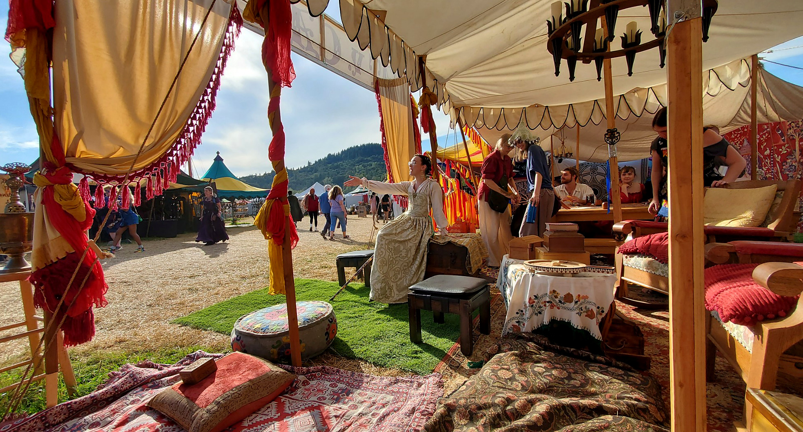

Come for the games.
Stay for the company.
Yes, we really did drag all these carpets, cushions, lanterns, tables, and chandeliers into a field. Come inside. Get comfortable. We have games to show you.
We're the Cat v. Canary Guild, the public educational program of Cat v. Canary Foundation, a Washington-based 501(c)(3) nonprofit. Our volunteers research, recreate, preserve, and teach games played across cultures and centuries—sometimes millennia. We like our history hands-on and our guests comfortably seated.
We make room for curious newcomers, longtime history enthusiasts, disabled guests, and anyone who needs a shady seat and a little good company. No experience required; our guides teach by playing alongside you.
The games are free to play once you're inside the faire. Come dressed as royalty, a pirate, or somebody who just wanted a lemonade. We'll teach you.
What shall we play? ↗